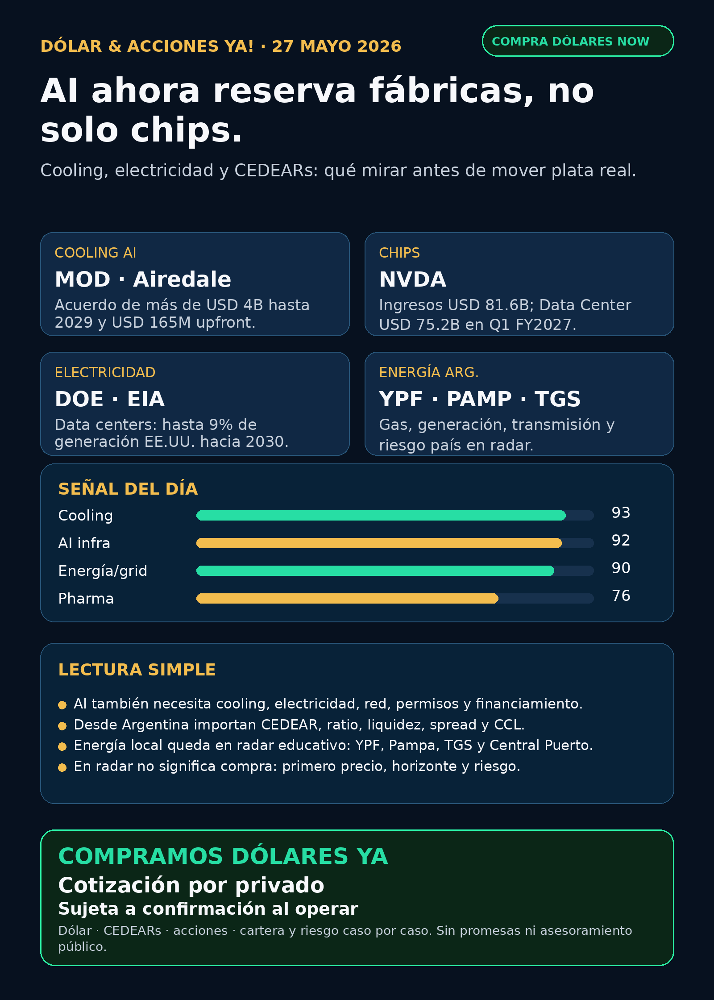

Simulación Uno Finanzas · Newsletter WhatsApp · 27 mayo 2026
Dólar & Acciones YA!
AI ahora reserva fábricas de cooling: Modine + NVDA + energía/grid, leído desde Argentina con CEDEARs, MEP/CCL, spread y riesgo.
DÓLAR · CEDEARs · ACCIONES · RIESGOServicio privado por mensaje. Cotización de dólar sujeta a confirmación al operar.

Escuchalo en 2 minutos
Audio descriptivo de Lola
Resumen hablado para WhatsApp: tesis, señales, riesgos y qué mirar desde Argentina.
Links útiles
## Lectura simple del día
La señal nueva más útil de hoy no viene de un modelo nuevo ni de un rumor de Twitter: viene de infraestructura física. Modine anunció un acuerdo de capacidad de más de USD 4.000 millones para sistemas de cooling Airedale destinados a data centers entre 2027 y 2029, con USD 165 millones pagados por adelantado para financiar expansión de capacidad.
En criollo: la inteligencia artificial ya no solo compite por GPUs. También compite por electricidad, transformadores, terrenos, fibra, permisos, cooling, fábricas y financiamiento. Cuando un cliente reserva producción de refrigeración por varios años, el cuello de botella se vuelve industrial, no solo digital.
Para una persona en Argentina, la traducción práctica es: antes de entusiasmarse con un ticker, hay que separar cuatro cosas distintas: buena empresa, buen precio, buen instrumento local y buen tamaño dentro de una cartera. CEDEAR, ADR, acción local, ETF o fondo cerrado no son lo mismo. Y además entran MEP/CCL, liquidez, spread y comisiones.
Este radar está ordenado por valor educativo y calidad de evidencia. No es orden de compra.
## Tesis central
AI está entrando en una etapa de reserva de capacidad. Primero vimos chips y HBM. Después electricidad y data centers. Ahora aparece otra capa: proveedores industriales que reciben pagos upfront para garantizar producción futura.
La tesis del día: si AI necesita reservar fábricas de cooling para poder crecer, los ganadores no van a estar solo en software. También hay que mirar semis, energía, grid, thermal management, data centers, financiamiento, y desde Argentina, el instrumento correcto para exponerse sin perseguir hype.
## Señales educativas de hoy — radar, no recomendación
### 1) Modine / MOD — cooling AI pasa a ser capacidad reservada
Modine informó un Long-Term Capacity Agreement con un cliente estratégico de data centers para garantizar más de USD 4.000 millones en productos de cooling Airedale entre 2027 y 2029. También recibió USD 165 millones upfront para inversiones de capacidad. Data Center Knowledge leyó el mismo evento como señal de que los compradores de AI infrastructure empiezan a reservar capacidad manufacturera años antes.
- Estado: señal fortalecida para thermal management / data-center supply chain.
- Riesgo: cliente no identificado, ejecución de capacidad, márgenes, valuación, concentración y ciclo de data centers.
- Fuente primaria: https://www.prnewswire.com/news-releases/modine-announces-landmark-4-billion-long-term-capacity-agreement-through-2029-with-strategic-data-center-customer-for-airedale-by-modine-cooling-solutions-302779610.html
- Fuente sectorial: https://www.datacenterknowledge.com/infrastructure/modine-s-4b-deal-turns-cooling-capacity-into-reserved-infrastructure
- Argentina: si se mira vía acción/CEDEAR/proxy, primero hay que verificar instrumento disponible, spread, liquidez y precio. En radar no significa compra.
### 2) NVIDIA / NVDA — sigue siendo motor, pero no es toda la historia
NVIDIA reportó Q1 FY2027 con ingresos de USD 81.6B, +85% interanual; Data Center de USD 75.2B, +92% interanual; autorización adicional de recompra por USD 80B; y outlook de Q2 de USD 91B +/-2%, sin asumir ingresos de Data Center compute de China.
- Estado: señal estructural fuerte para AI infra.
- Riesgo: precio, expectativas extremas, China, concentración, márgenes y energía/data centers.
- Fuente primaria SEC: https://www.sec.gov/Archives/edgar/data/1045810/000104581026000051/q1fy27pr.htm
- Argentina: NVDA puede ser CEDEAR, pero el resultado local depende también de CCL, ratio, spread y comisiones.
### 3) Electricidad y grid — el segundo peaje sigue vigente
DOE sostiene que la demanda eléctrica total de EE.UU. podría crecer 15–20% en la próxima década y que los data centers podrían consumir hasta 9% de la generación anual de EE.UU. en 2030, contra 4% de carga total en 2023. EIA proyectó que el consumo eléctrico de servidores en edificios comerciales podría llegar a 446–818 BkWh en 2050, y que servidores solos pasarían de 7% del consumo eléctrico comercial estimado en 2025 a 22–33% hacia 2050, según escenario.
- Estado: tesis estructural fortalecida para energía, utilities, grid, cooling y data centers.
- Riesgo: permisos, transmisión, tarifas, deuda, regulación, tiempos de conexión y política local.
- Fuentes primarias: https://www.energy.gov/oe/clean-energy-resources-meet-data-center-electricity-demand y https://www.eia.gov/todayinenergy/detail.php?id=67704
- En criollo: la nube tiene enchufe. Si no hay electricidad y refrigeración, no hay AI escalable.
### 4) Alphabet / GOOGL — AI también consume leases y deuda
Alphabet reveló leases principalmente vinculados a data centers todavía no iniciados con pagos futuros de USD 75.6B al 31/03/2026, y emisión de notes en yenes por ¥576.5B. La lectura no es “comprar Google”; es que el capex de AI se financia con compromisos reales de largo plazo.
- Estado: señal fortalecida para hyperscalers / AI capex.
- Riesgo: retorno de inversión, competencia cloud, monetización de AI, márgenes y regulación.
- Fuente primaria SEC: https://www.sec.gov/Archives/edgar/data/1652044/000119312526228923/d137872d424b5.htm
- Argentina: GOOGL puede mirarse como CEDEAR, pero no sin precio, ratio, liquidez y contexto de cartera.
### 5) Energía Argentina — YPF y proxies locales siguen en radar educativo
YPF informó vía SEC 6-K la transferencia del 100% de la concesión convencional Manantiales Behr y transporte asociado a Pecom 51% y San Benito Upstream 49%. La lectura educativa es que YPF sigue optimizando portfolio. Para Argentina, energía no es solo “AI power”: también es Vaca Muerta, gas, generación, transmisión, tarifas, riesgo país y regulación.
- Estado: radar local educativo.
- Riesgo: riesgo país, regulación, tarifas, deuda, petróleo/gas, liquidez y timing político.
- Fuente primaria: https://www.sec.gov/Archives/edgar/data/904851/000155485526001098/MainDocument.htm
- Nombres a seguir: YPF, Pampa Energía, TGS, TGN, Central Puerto, Edenor y Transener. No se elevan a compra sin precio, instrumento y caso personal.
### 6) Pharma / salud — GLP-1 y oncología siguen siendo radar real
Novo Nordisk informó por 6-K señales regulatorias sobre Wegovy oral/oral semaglutide y Wegovy 7.2 mg; FDA publicó warning letter sobre semaglutide/API y problemas CGMP/relabeling/repackaging; y AstraZeneca informó aprobación FDA de Enhertu para dos indicaciones en cáncer de mama temprano HER2+.
- Estado: salud/pharma sigue en radar real, no solo AI.
- Riesgo: aprobación final, tolerabilidad, supply, patentes, competencia, precio y regulación.
- Fuentes: https://www.sec.gov/Archives/edgar/data/353278/000117184326003634/f6k_052226.htm ; https://www.sec.gov/Archives/edgar/data/353278/000117184326003645/f6k_052226.htm ; https://www.fda.gov/inspections-compliance-enforcement-and-criminal-investigations/warning-letters/harbin-jixianglong-biotech-co-ltd-723330-05012026 ; https://www.sec.gov/Archives/edgar/data/901832/000165495426005038/a6159e.htm
- En criollo: GLP-1 no es magia bursátil. Es ciencia, regulación, supply y competencia.
### 7) Space / RKLB — contrato fuerte, financiación a vigilar
Rocket Lab anunció un contrato de USD 90M de U.S. Space Force Space Systems Command para dos satélites GEO con payload Heimdall. En paralelo, registró un programa at-the-market/forward de hasta USD 3.000M en acciones comunes.
- Estado: señal fortalecida para RKLB como space systems/defensa; vigilar dilución.
- Riesgo: ejecución, márgenes, cash burn, competencia, financiamiento y volatilidad.
- Fuentes: https://www.globenewswire.com/news-release/2026/05/22/3299858/0/en/rocket-lab-awarded-90m-contract-to-build-geo-satellites-hosting-space-domain-awareness-payload-for-u-s-space-force.html y https://www.sec.gov/Archives/edgar/data/1819994/000181999426000044/rocketlabcorporation-424b5.htm
- SpaceX/SPCX: no hay S-1/listing oficial verificado en esta corrida. No se publica como hecho.
### 8) Private markets — DXYZ y RVI son educación, no FOMO
DXYZ informó NAV USD 24.56 al 31/03/2026 y exposición a private tech como Anthropic, SpaceX vía SPVs, OpenAI y money market. RVI es Robinhood Ventures Fund I; un 13G muestra Robinhood Markets con 52.18% al 31/03/2026, pero holdings/NAV/volumen actual no quedaron como señal suficiente para titular.
- Estado: radar educativo / hype alto.
- Riesgo: premium vs NAV, liquidez, SPVs, concentración, falta de transparencia y acceso desde Argentina.
- Fuentes: https://www.sec.gov/Archives/edgar/data/1843974/000157587226000288/dxyz100_424b3.htm y https://www.sec.gov/Archives/edgar/data/2085091/000095010326007332/xslSCHEDULE_13G_X02/primary_doc.xml
- En criollo: un fondo cerrado con private tech no es lo mismo que comprar SpaceX u OpenAI directo.
## Watchlist base — seguimiento rápido
- NVDA: señal fuerte por resultados y Data Center; riesgo China/valuación.
- RKLB: contrato USD 90M fortalece space systems; ATM de USD 3B obliga mirar dilución.
- GOOGL/GOOG: leases/capex muestran que AI se vuelve infraestructura física y financiera.
- TSM / ASML / MU: moat estructural de foundry, litografía y memoria/HBM; sin catalizador superior al cooling/energía en este corte.
- PLTR: software operativo AI en radar; vigilar valuación y evidencia de monetización.
- AAPL: ecosistema fuerte; no elevar como AI moat sin señal nueva verificable.
- HOOD: vigilar por relación con RVI, pero no confundir HOOD empresa operativa con RVI fondo cerrado.
- TSLA: autonomy/robotaxi/energy en radar; sin fuente primaria superior hoy para titular.
- Gold / GLD / GOLD / B: resolver instrumento exacto antes de hablar de oro. GLD no es Barrick; GOLD/B pueden referir a otras entidades según fuente.
- RVI: fondo cerrado/private markets; no accionable sin NAV/holdings/volumen/acceso claro.
## Autonomy / physical AI
Waymo dentro de Alphabet, Tesla robotaxi/energy, Uber como capa de distribución, Amazon/Zoox y Joby quedan en seguimiento. Hoy no hubo una fuente primaria más fuerte que cooling, NVDA, energía, pharma y RKLB para titular. Se mantiene el radar, no se fuerza señal.
## Capa Argentina: cómo leer esto sin confundirse
- CEDEAR: instrumento local para exponerte a empresas de afuera. Tiene ratio, liquidez, spread, comisiones y CCL implícito.
- MEP/CCL: referencias de dólar financiero. Pueden mover el resultado aunque la acción afuera no cambie.
- Spread: diferencia entre precio de compra y venta. Si es grande, entrar y salir sale caro.
- Moat: ventaja difícil de copiar. En AI puede ser chip, software, energía, datos, escala, capacidad industrial o regulación.
- Capex: plata grande invertida para construir infraestructura.
- Dilución: cuando una empresa emite acciones, tu participación relativa puede valer menos si no crece lo suficiente.
- GLP-1: tratamientos metabólicos/obesidad; mercado gigante, pero regulado y competitivo.
- Fondo cerrado / ETF: no son lo mismo. Un fondo cerrado puede cotizar con premio/descuento contra NAV y tener liquidez limitada.
Dólar de referencia público al último dato disponible de DolarAPI visto en browser: blue compra 1420 / venta 1440; MEP/bolsa compra 1429.7 / venta 1435.9; CCL compra 1484.8 / venta 1486.9, con actualización 26/05/2026 20:56 UTC. Para operar, la cotización se confirma por privado en el momento.
## Red flags / hype para ignorar
- “AI es solo Nvidia”: incompleto. También hay electricidad, cooling, red, permisos, deuda y supply chain.
- “Modine = compra segura”: no. Es una señal de radar, con cliente no identificado y riesgo de ejecución.
- “SpaceX/SPCX ya cotiza”: no verificado por S-1/listing oficial.
- “DXYZ/RVI = comprar SpaceX/OpenAI”: falso o incompleto; hay NAV, premium, liquidez y estructura.
- “Energía argentina es obvia”: no. Negocio real puede convivir con riesgo país/regulatorio fuerte.
- “CEDEAR = acción afuera”: no exactamente; entra CCL, ratio, spread, liquidez y comisiones.
## Qué mirar después
1. Modine / cooling: si más proveedores de thermal management reciben acuerdos de capacidad parecidos.
2. NVIDIA: márgenes, China, supply, energía y ritmo de data centers.
3. DOE/EIA/utilities: si el estrés de red se vuelve inversión o restricción.
4. Energía local: YPF/Pampa/TGS/TGN/Central Puerto con precio, liquidez, fuente primaria y caso personal.
5. Pharma: Novo/Lilly/AstraZeneca/Merck por aprobaciones, tolerabilidad, supply y M&A/pipeline.
6. RKLB: nuevos contratos, margen y dilución efectiva del ATM.
7. DXYZ/RVI: NAV actualizado, premium/descuento, volumen, holdings y acceso real desde Argentina.
## Servicio privado
Si querés comprar o vender dólares, mirar CEDEARs, acciones o armar una estrategia financiera con riesgo, monto y horizonte claros, escribime por privado y lo vemos caso por caso. Cotización de dólar sujeta a confirmación al momento de operar.
Este reporte gratuito es informativo y educativo. No es asesoramiento financiero personalizado, no es recomendación de compra/venta y no promete resultados.
Compra/venta de dólares y consulta privada
Si querés comprar o vender dólares, mirar CEDEARs, acciones o ordenar una estrategia financiera personal, escribime por privado y lo vemos caso por caso.
Reporte gratuito informativo. No es asesoramiento financiero personalizado ni promesa de resultado.